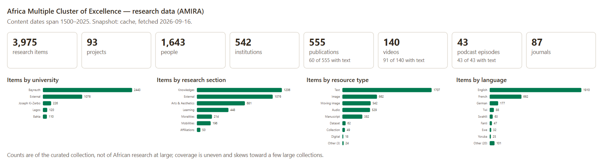
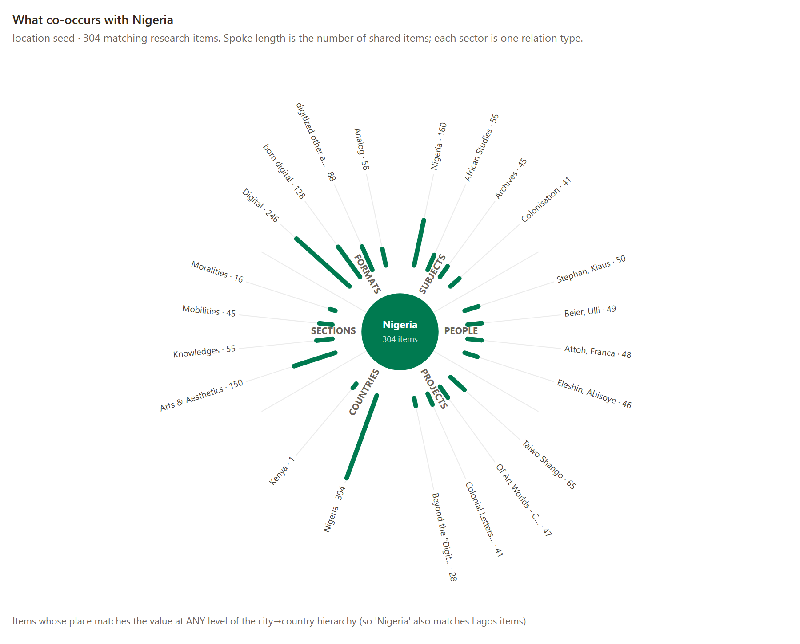

Sommaire
Atelier Point Sud · Humanités numériques et IA en études africaines · STIAS, Stellenbosch
Les serveurs MCP pour les GLAM africains
Ouvrir l’accès, garder la maîtrise ?
Le contexte
Les collections ouvertes sous double pression

Weinberg, GLAM-E Lab, 2025. Lire le rapport ↗
- 39 institutions sur 43 signalent une hausse du trafic
- 27 d’entre elles l’attribuent, au moins en partie, aux robots
- De nombreux robots ne respectent pas les consignes du
robots.txt
- Des réponses peuvent être produites dans un assistant IA sans consultation du site source
- L’enjeu : rester repérable, contextualisé et correctement cité
Diapositive 3
L’utilisateur obtient sa réponse dans le chatbot, sans nécessairement visiter la collection.
À mesure que la recherche passe par les assistants, les sources mobilisées risquent de devenir moins visibles et moins consultées. Chartbeat, 2026 ↗
01
Deux collections
Deux modes de constitution et de description, un même enjeu de médiation.
Collection Islam Afrique de l’Ouest (CIAO)
Une archive ouverte, bâtie par un historien
Une collection issue de quinze ans de recherche sur l’islam en Afrique de l’Ouest, ouverte en 2023.
- Coupures de presse et publications islamiques : revues, brochures, tracts
- Six pays, surtout en français, mais aussi en arabe, haoussa, kabyé, ewé et dendi
- Sur islam.zmo.de, hébergée au ZMO à Berlin
25 067 notices de plusieurs types, dont plus de 17 000 articles de presse et publications islamiques · avril 1961 – août 2026
Africa Multiple Interactive Research Atlas (AMIRA)
Explorer les recherches du Cluster Africa Multiple à Bayreuth
Coordonnée à l’Université de Bayreuth, AMIRA présente les recherches du Cluster Africa Multiple avec ses centres partenaires.
- Items, projets, personnes, institutions, publications
- Podcasts et vidéos, en partie accompagnés de transcriptions interrogeables
02
Organiser l’accès des assistants
Définir les outils de recherche et le contexte transmis avec les résultats.
L’objectif
Pouvoir vérifier les réponses en remontant aux sources
Extrait de la réponse de Gemini
« Kpalimé hosted a highly dynamic, visible, and economically influential Muslim minority. »
Référence affichée : The Christian Chronicle.
Des références peu pertinentes pour la question sur Kpalimé dans les années 1990. Voir la capture ↗ · Conversation ↗

Des réponses souvent génériques, des références parfois peu fiables — alors que nos collections sont déjà moissonnées par des bots.
- Ancrer les réponses dans des sources identifiables et citées
- Revenir aux documents pour vérifier les affirmations
Model Context Protocol · norme ouverte, novembre 2024
MCP : relier un assistant aux outils de la collection
Un protocole ouvert permettant à une application d’interroger des outils décrits par un serveur. modelcontextprotocol.io
Interpréter la demande, sélectionner des outils, formuler les requêtes et rédiger une réponse.
Définir les opérations disponibles, exécuter les recherches et les calculs, renvoyer des résultats documentés.
Deux serveurs, une même norme
Deux collections, deux serveurs pour les interroger
Collection Islam Afrique de l’Ouest
- Chercher des articles sur un sujet
- Lire les textes disponibles et retrouver leurs notices
- Repérer les lieux et les personnes dans l’index
- github.com/fmadore/iwac-mcp-server
Africa Multiple Interactive Research Atlas
- Obtenir un aperçu des ressources de la collection
- Chercher dans les transcriptions de vidéos et de podcasts
- Explorer les liens entre sujets, personnes et projets
- https://github.com/AM-Digital-Research-Environment/
amira-mcp-server
03
Interroger les collections en pratique
Situer un corpus, chercher avec ses catégories, explorer ses relations.
Cadrer avant de chercher
Situer la collection avant d’interpréter ses résultats
Les trois langues les plus représentées
- Anglais1 910
- Français662
- Allemand177
Nombre d’items · extrait de la distribution, sans les autres langues.


Serveur CIAO · sujets, lieux, personnes
Chercher avec les catégories de la collection
Les villes les plus citées
- Ouagadougou3 243
- La Mecque1 810
- Abidjan1 484
Les lieux du pèlerinage
- La Mecque1 810
- Arabie saoudite1 686
- Médine515
Articles rattachés aux entrées géographiques de l’index — extrait de la distribution.
Explorer les associations décrites autour d’une entité
Explorer les relations décrites dans la collection
- Point de départ · lieu
- Nigeria 304 items
- Sujet associé
- Archives 45 items partagés


Source complète · find_related · cliquer pour agrandir
IWAC MCP Server · le savoir mis en instructions
Formaliser le savoir du curateur et de l’historien
Un SKILL.md est un fichier d’instructions qui guide l’assistant dans une tâche. Ici, il formalise une connaissance située de la collection.
- Langues et variantes : « médersa », « madrasa »
- Biais et lacunes selon les pays, les périodes et les langues
- Choix d’indexation et limites des textes disponibles
- Situer les journaux dans leur contexte politique
- Croiser presse généraliste, publications islamiques et travaux scientifiques
- Distinguer absence de résultat et absence du phénomène
Des savoirs explicités, dont l’application par l’IA reste à vérifier. Consulter le skill ↗
Qui contrôle la médiation ?
Qui contrôle la manière dont l’IA cherche, interprète et cite les collections ?
Les institutions définissent les outils et documentent les collections ; les fournisseurs de modèles influencent leur utilisation dans les réponses.
Conclusion
Relier la souplesse des assistants à la connaissance des collections.
L’apport : explorer des sources identifiables avec une méthode et des limites explicites.
L’enjeu : garder une prise sur la recherche, l’interprétation et la citation.
À essayer : IWAC MCP Server · AMIRA MCP Server.
À développer : un chatbot sur le site, avec un modèle à poids ouverts, sans service de chatbot commercial.